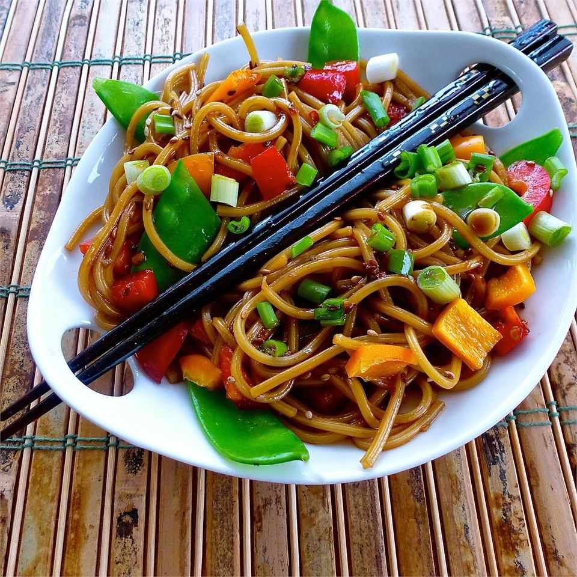

Easy Asian Pasta Salad

Cool pasta salad on a hot summer day
is the perfect BBQ side dish. It is always one of the first things to go.
Everyone will be asking for seconds with this easy and super delicious recipe.
Ingredients
- 6 tablespoons soy sauce
- ¼ cup white sugar
- 3 tablespoons rice vinegar
- 1 tablespoon toasted sesame seeds
- 2 teaspoons sweet chili sauce
Steps
- Bring a large pot of lightly salted water to a boil. Cook spaghetti in the boiling
water, stirring occasionally until cooked through but firm to the bite, 10 to 12 minutes.
Drain and rinse under cold water. Transfer pasta to a serving bowl and toss with olive
oil.
- Whisk soy sauce, sugar, vinegar, sesame seeds, chili sauce, and sesame oil together in a
bowl until sugar dissolves. Toss soy sauce mixture with pasta; top with green onions, red
bell pepper, and snap peas. Refrigerate 30 minutes to overnight to allow flavors to blend.
Toss again before serving.